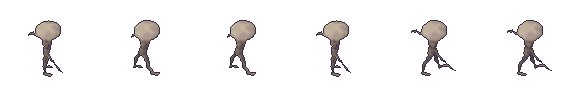

The Mycelid
The playable folk
Mushroom-capped people of the hollows. You start as one, and you rebuild yourself as you go: head, torso and each limb can be replaced with parts taken from other creatures.
- Body
- head, torso, two arms, two legs
- Grafts
- raptor forelimbs, spider fangs, dusk-eye paws, aphid legs, hare hindlegs
- Home
- Gillhearth, on the refuge terraces